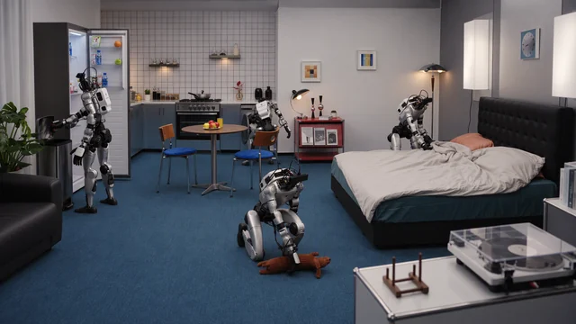


Beijing University of Posts and Telecommunications
2023–PresentPh.D. in Intelligent Science and Technology (in progress); joint training with BIGAI.
Advisors: Siyuan Huang and Tengyu Liu.
BUPT advisor: Zhaofeng He.
I am a Ph.D. student jointly affiliated with Beijing University of Posts and Telecommunications (BUPT), advised by Zhaofeng He, and the Beijing Institute for General Artificial Intelligence (BIGAI), advised by Siyuan Huang and Tengyu Liu.
My research focuses on robot perception and control and physics-based character animation, with a particular interest in vision-language-action (VLA) models and sim-to-real transfer.
I am also an ESP8266 enthusiast.
* Equal contribution

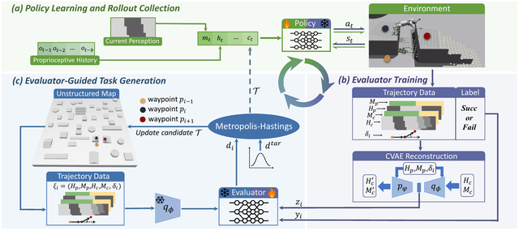
CoRL 2026
TACL learns to estimate trajectory difficulty for the current policy and uses Metropolis–Hastings sampling to generate training tasks on unstructured terrain. Across four obstacle types at their highest difficulty levels, TACL achieves an average trajectory success rate of 84.25%, compared with 65.75% for the handcrafted curriculum baseline.
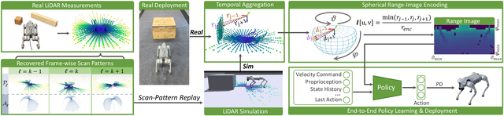
Under review
We encode temporally aggregated LiDAR point clouds as spherical range images and replay real scanning patterns in simulation. The resulting policies transfer directly to quadruped hardware, outperforming the depth-image and PointNet-based LiDAR baselines evaluated in the study.
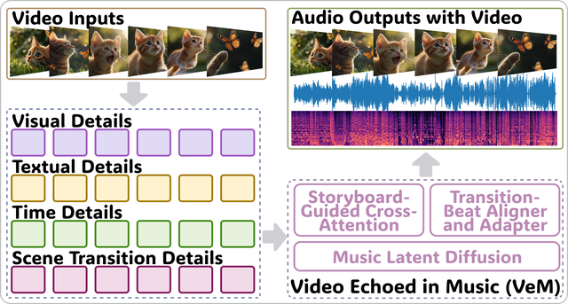
AAAI 2026 · Oral
VeM generates background music aligned with a video’s content, timing, and rhythm. It combines hierarchical video understanding with storyboard-guided cross-attention and a transition–beat alignment module to synchronize musical beats with scene changes.
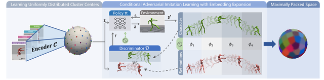
ACM Multimedia 2025 · Oral
UniMax uses neural collapse and embedding expansion to organize skill embeddings into more uniformly distributed clusters in latent space. The controller preserves motion style while supporting motion variation, skill switching, and smooth interpolation between skills.
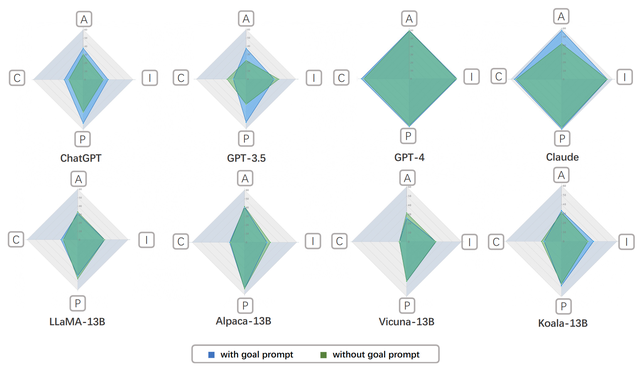
AGI 2025
HVAE evaluates how consistently large language models follow specified social values. Using the Social Value Orientation framework and a value-rationality metric, it measures how models balance self-interest against the welfare of others. The models evaluated in the study show a tendency toward neutral values.
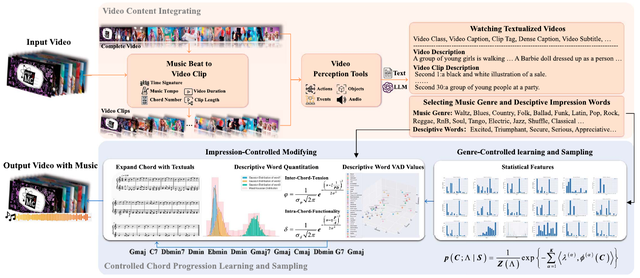
IEEE Transactions on Computational Social Systems, 2025
VEH uses chord progressions to connect video content with controllable background music. Vision-language models provide semantic cues, while energy-based learning and sampling offer interpretable control over harmony with less reliance on paired video–music data.
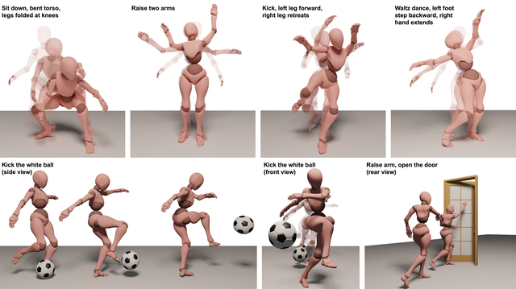
CVPR 2024
AnySkill combines a low-level skill policy trained through imitation learning with a high-level controller trained using CLIP image–text similarity rewards. It enables physically simulated agents to follow unseen language instructions and interact with objects without task-specific reward design.
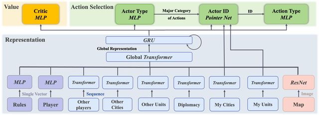
ICLR 2024 · Spotlight
CivRealm is a Civilization-inspired environment for studying learning and reasoning in long-term decision-making. It supports reinforcement learning agents and language model agents, testing their ability to plan, negotiate, and adapt under incomplete information in both mini-games and the full game.
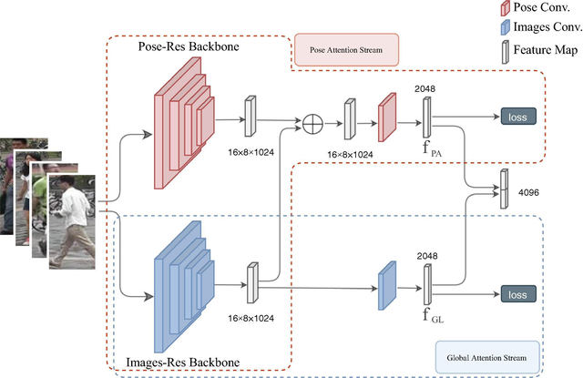
Information Sciences, 2021
PA-Net combines pose attention with global appearance features for person re-identification. Pose-guided training improves local and global representations while reducing sensitivity to the domain gap between pose-estimation and re-identification data.
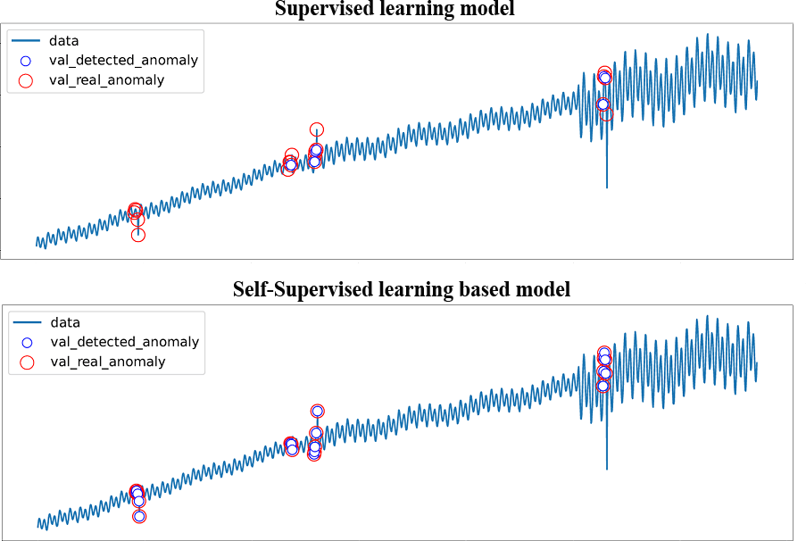
Master’s dissertation, April–August 2021
I investigated self-supervised learning for time-series anomaly detection with limited labeled data. The learned representations improved detection performance compared with a supervised baseline and several unsupervised methods.
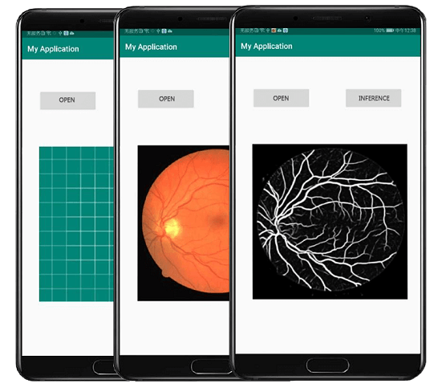
July–August 2019
This Android application performs retinal vessel segmentation on a phone with a Kirin chipset. I trained the model on the DRIVE dataset and deployed it using Huawei HiAI, integrating on-device inference and visualization into the app.
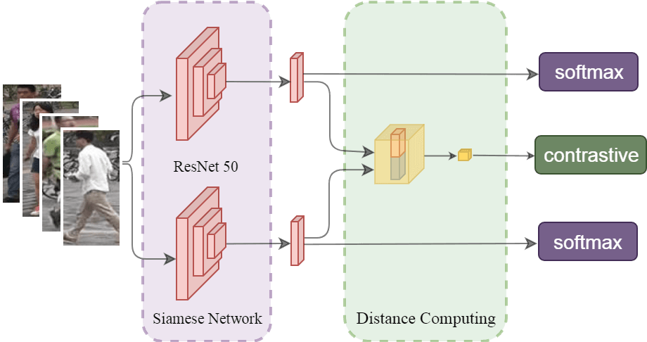
Undergraduate final-year project, April–July 2019
This web-based system searches for a person across images and videos using a Siamese network that combines identity classification and contrastive learning. Its interface supports searching, record management, and review of retrieval results.
Project leader, July–September 2017
This Internet of Things (IoT) platform allows users to monitor sensor data and control connected devices through a web browser or WeChat. I led a five-person team to build the platform, including tools for exploring and modeling sensor data.
Project leader, February–July 2017
This connected plant-care system monitors environmental conditions, enables remote watering and heating, and accepts voice commands through WeChat. I led a seven-person team to build the hardware and control interfaces.
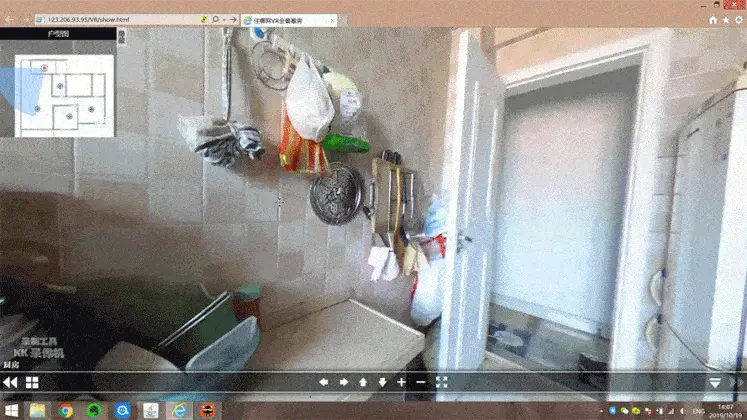
Project leader, June–September 2016
This property-listing platform converts panoramic photographs into virtual tours that can be viewed through a web browser or a VR headset. I led a four-person team to develop the property-listing and virtual-tour features.
Ph.D. in Intelligent Science and Technology (in progress); joint training with BIGAI.
Advisors: Siyuan Huang and Tengyu Liu.
BUPT advisor: Zhaofeng He.
MSc in Design Informatics, School of Informatics.
Advisors: Hakan Bilen and Maria Wolters.
Bachelor’s degree in Computer Science and Technology.
Research Intern, Humanoid Foundation Models.
I am a core contributor to Δ0’s real-to-sim-to-real evaluation framework for humanoid VLA models.
Research Intern, Frontier Research Center.
I conducted research on robot perception, locomotion, and physics-based character control.
Algorithm Engineer, Office of the CTO.
I worked on Kubernetes, WebAssembly, and edge AI.
Research Assistant, Intelligence Computing System Lab.
I worked on person re-identification under the supervision of Kai Wang.